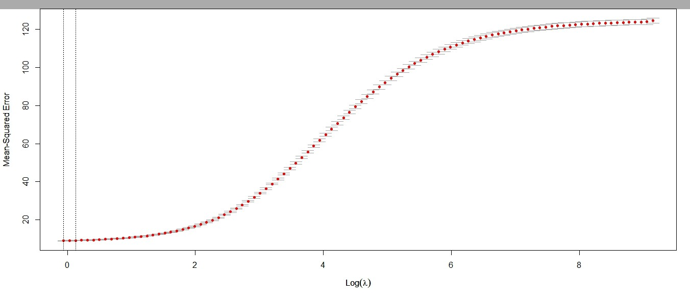
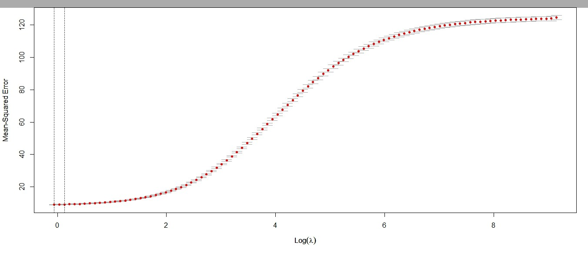

Markov Decision Processes
Theory and Applications
Group Project
Stochastic Processes
M.Stat. $1^{\text{st}}$ Year, ISI Kolkata
Stochastic Processes
M.Stat. $1^{\text{st}}$ Year, ISI Kolkata
We are going to discuss:
- Definition and Objective
- Value functions
- Bellman‘s equation
- Iterative methods
- Linear programming
- Two “Toy” examples
Basic Idea
A Markov Decision Process (MDP) is a discrete-time stochastic control process, i.e., similar to usual Markov chain, but the transition events can be influenced by some action.- Transitions are partly random, and partly under the influence of a decision maker.
- Additionally, there is some reward/penalty for each transition event.
- The goal is to find a policy/strategy such that the total reward is maximized in long term.
Definition
Formally, a Markov Decision Process consists of- A state space $\mathcal{X}$
- An action space $\mathcal{A}$
- For each $a\in \mathcal{A}$, we have a Markov chain with state space $\mathcal{X}$ & transition matrix $P_a$. $$ P_a(s, s')=\mathbb{P}\left[X_{t+1}=s'|X_t=s, A_t=a\right] $$
- For each $a\in \mathcal{A}$, we have a real valued reward matrix. $$ R_a(s, s')=\mathbb{E}\left[R_{t+1}|X_t=s, A_t=a, X_{t+1}=s'\right] $$
Objective
The goal is to find a good “policy”. A policy $\pi$ is a function, $$ \pi:\mathcal{X}\rightarrow\mathcal{A}\\ \text{ or }\\ \pi:\mathcal{X}\rightarrow\Delta{(\mathcal{A})} $$ Given the policy, the decision maker will choose the action $\pi(s)$ when the process is at state $s$. Policies can also be time dependent, i.e., we may want to consider different $\pi_t$ for each time point.Objective Function
We want to maximize some cumulative function of the random rewards. These are called value functions.- If interested only upto a finite time, we can maximize, $$ J_n(x_0)=\mathbb{E}\left[\sum_{t=0}^{n-1}R_t\mid X_0=x_0\right] $$
-
If interested upto long/infinite time, we can maximize,
$$ J_{\alpha}(x_0)=\mathbb{E}\left[\sum_{t=0}^{\infty}\alpha^t R_t\mid X_0=x_0\right] $$ where $0<\alpha<1$ is the discount factor. $$ J(x_0)=\lim_{n\rightarrow\infty}\mathbb{E}\left[\frac{1}{n}\sum_{t=0}^{n}R_t\mid X_0=x_0\right] $$
Objective Function
So, for a given policy $\pi$, we can evaluate the policy as, $$ J^{\pi}_{\alpha}(x_0)=\mathbb{E}\left[\sum_{t=0}^{\infty}\alpha^t R_t^{\pi}\mid X_0=x_0\right] $$ where $A_t=\pi(X_t)$ at each step, and thus, $R^{\pi}_t=R_{\pi(X_t)}(X_t, X_{t+1})$.
For other value functions, we can evaluate the policy similarly.
Objective Function
Clearly, the maximized objective function is given by,
$$
J^{\star}_{\alpha}(x_0)=\max_{\pi}J^{\pi}_{\alpha}(x_0)
$$
and the optimal policy is,
$$
\pi^{\star}=\arg\max_{\pi}J^{\pi}_{\alpha}(x_0)
$$
But these are just notations. How to “compute” those quantities for a given problem?
Solving MDP
First consider the problem for finite horizon, upto time $n$. Want to find $\pi$ such that $J^{\pi}_n(x)$ is maximized.The policy need not be time homogeneous, as the time horizon is finite. So consider $\mathbf{\pi}=(\pi_0, \ldots, \pi_{n-1})$. Define a value function for the tail part, i.e., $$ J^{\pi}_{i,n}(x_i)=\mathbb{E}\left[\sum_{t=i}^{n-1}R_t\mid X_i=x_i\right]$$
Solving MDP
One crucial observation is, for the optimal policy $\mathbf{\pi}^{\star}$ and any state $x_i$, the tail policy $(\pi_i^{\star}, \ldots, \pi_{n-1}^{\star})$ optimizes the value from $x_i$ irrespective of the previous actions and transitions. This is known as the Bellman’s Principle of optimality.
So to find $(\pi_0^{\star}, \ldots, \pi_{n-1}^{\star})$, we can start with finding $\pi_{n-1}^{\star}$. Then using that $\pi_{n-1}^{\star}$, we can find $\pi_{n-2}^{\star}$, and so on.
Thus, we can do Dynamic Programming with Backward Induction.
Solving MDP
Finding $\pi_{n-1}^{\star}$ is easy. It is given by,
$$
\pi_{n-1}^{\star}(x_{n-1})=\arg\max_{a\in\mathcal{A}}\mathbb{E}\left[R_{n-1}\mid X_{n-1}=x_{n-1}, A_{n-1}=a\right]\\
\text{and }J_{n-1, n}^{\star}(x_{n-1})=\max_{a\in\mathcal{A}}\mathbb{E}\left[R_{n-1}\mid X_{n-1}=x_{n-1},A_{n-1}=a\right]
$$
Solving MDP
Using $\pi_{n-1}^{\star}$, we can find $\pi_{n-2}^{\star}$ using,
$$
\pi_{n-1}^{\star}(x_{n-2})=\\ \arg\max_{a\in\mathcal{A}}\mathbb{E}\left[R_{n-2}+J_{n-1,n}^{\star}\mid X_{n-2}=x_{n-2}, A_{n-2}=a\right]\\
\text{and, }J_{n-2, n}^{\star}(x_{n-2})=\\ \max_{a\in\mathcal{A}}\mathbb{E}\left[R_{n-2}+J_{n-1,n}^{\star}\mid X_{n-2}=x_{n-2}, A_{n-2}=a\right]
$$
Optimal Value Operator
So if we define the opertor $T:\mathbb{R}^\mathcal{X}\rightarrow\mathbb{R}^\mathcal{X}$ as,
$$
(TJ)(x)=\max_{a\in\mathcal{A}}\mathbb{E}\left[R_0+J(X_1)\mid X_0=x, A_0=a\right]
$$
then $J_{n}^{\star}=J_{0,n}^{\star}$ can be found using,
$$
J_{i,n}^{\star}=T\circ J_{i+1, n}^{\star}
$$ and starting with $J_{n,n}^{\star}=0$
The operator $T$ maybe called Optimal Value Operator.
Policy Evaluation Operator
Similarly for a stationary policy $\mathbf{\pi}$, if we define the opertor $T_{\pi}:\mathbb{R}^\mathcal{X}\rightarrow\mathbb{R}^\mathcal{X}$ as,
$$
(T_{\pi}J)(x)=\mathbb{E}\left[R_0+J(X_1)\mid X_0=x, A_0=\pi(x)\right]
$$
then $J_{n}^{\pi}=J_{0,n}^{\pi}$ can be found using,
$$
J_{i,n}^{\pi}=T\circ J_{i+1, n}^{\pi}
$$ and starting with $J_{n,n}^{\pi}=0$
The operator $T_{\pi}$ maybe called Policy Evaluation Operator.
Infinite horizon
For finite horizon, we know how to compute the optimal quantities in finite number of steps. What if we want the optimal policy for infinite horizon considering the discounted total reward?
Suppose we similarly define the two operators taking into account the discount factor: $$ (TJ)(x)=\max_{a\in\mathcal{A}}\mathbb{E}\left[R_0+\alpha J(X_1)\mid X_0=x, A_0=a\right] $$ and $$ (T_{\pi}J)(x)=\mathbb{E}\left[R_0+\alpha J(X_1)\mid X_0=x, A_0=\pi(x)\right] $$
Suppose we similarly define the two operators taking into account the discount factor: $$ (TJ)(x)=\max_{a\in\mathcal{A}}\mathbb{E}\left[R_0+\alpha J(X_1)\mid X_0=x, A_0=a\right] $$ and $$ (T_{\pi}J)(x)=\mathbb{E}\left[R_0+\alpha J(X_1)\mid X_0=x, A_0=\pi(x)\right] $$
Infinite horizon
Similar to the finite case, the obvious choice for an iterative procedure to find the optimal policy is,
- Start with a reasonable choice for $\left\{J_{\alpha}(x):x\in\mathcal{X}\right\}$. Call it $J_{\alpha}^{(0)}$
- Do the iteration, $$ J_{\alpha}^{(i+1)}:=T\circ J_{\alpha}^{(i)} $$
- When it converges(?), say, to $\hat{J_{\alpha}}$, the optimal policy can be found with, $$ \hat{\pi}^{\star}(x):=\arg\max_{a\in\mathcal{A}}\mathbb{E}\left[R_0+\alpha \hat{J_{\alpha}}(x)\mid X_0=x, A_0=a\right] $$
Infinite horizon
More intuition behind the iteration:
The major questions are,


The results indicate that the air pollution situation was not as good as the official statistic would convey, and improvement, if any, was rather uncertain.

For infinite horizon, Bellman‘s optimality condition implies that,
$$
J_{\alpha}(x)=\max_{a\in\mathcal{A}}\sum_{y\in\mathcal{X}}P_a(x, y)\left\{R_a(x,y)+\alpha J_{\alpha}(y)\right\}
$$
If we write the iterative step more explicitly, it turns out to be,
$$
J_{\alpha}^{(i+1)}(x):=\max_{a\in\mathcal{A}}\sum_{y\in\mathcal{X}}P_a(x, y)\left\{R_a(x,y)+\alpha J_{\alpha}^{(i)}(y)\right\}
$$
So if the iteration converges, we get a relation similar to Bellman‘s equation.
Infinite horizon
Similarly if we want to find $J_{\alpha}^{\pi}$ for a given policy, we can do a similar iteration:
$$
J_{\alpha}^{\pi,(i+1)}:=T_{\pi}\circ J_{\alpha}^{\pi,(i)}
$$
The major questions are,
- Do these procedures converge?
- If yes, how fast?
Q: Does it converge?
Here is a theorem:
For any $\pi$ and $0<\alpha<1$, there is $J^{\pi}\in\mathbb{R}^{\mathcal{X}}$ such that,For all $J\in\mathbb{R}^{\mathcal{X}}$, $$ J_{\pi}=\lim_{k\rightarrow\infty}T_{\pi}^{k}J $$ $J^{\pi}$ is the unique solution to $$J=T_{\pi}\circ J $$
Q: Does it converge?
The idea of the proof is as follows:
First we can show that $T_{\pi}$ is a contraction, i.e., for any $J$ and $J'$,
$$
\lvert\lvert T_{\pi}J-T_{\pi}J'\rvert\rvert_{\infty}\leq\alpha\lvert\lvert J -J'\rvert\rvert_{\infty}
$$
Contraction property also implies existence and uniqueness of fixed point $J^{\pi}$. (Banach fixed point theorem)
For convergence, note that,
$$
\lvert\lvert T_{\pi}J-J^{\pi}\rvert\rvert_{\infty}\leq \alpha \lvert\lvert J-J^{\pi}\rvert\rvert_{\infty}\\ 0<\alpha<1
$$
Thus the policy iteration converges.
Effect of time:

Model with meteorological factors:
$$\text{PM}_{2.5} \sim sin\left(\frac{2\pi h}{24}\right)+cos\left(\frac{2\pi h}{24}\right) + month+ TEMP\\+PRES+DEWP+WSPM+RAIN+station$$
| Estimate Std. Error t value Pr(>|t|)
(Intercept) 150.82776 96.09912 1.570 0.11654
sin(2 * pi * hour/24) -10.42687 0.75967 -13.725 < 2e-16 ***
cos(2 * pi * hour/24) 0.03913 0.84293 0.046 0.96298
TEMP -3.32817 0.16970 -19.612 < 2e-16 ***
PRES 0.04890 0.09464 0.517 0.60536
DEWP 10.00022 0.09677 103.335 < 2e-16 ***
month_number 13.68644 0.64482 21.225 < 2e-16 ***
RAIN -205.74689 15.28953 -13.457 < 2e-16 ***
WSPM -6.73357 0.47992 -14.031 < 2e-16 ***
.... and station effects ***
---
Signif. codes: 0 ‘***’ 0.001 ‘**’ 0.01 ‘*’ 0.05 ‘.’ 0.1 ‘ ’ 1
Residual standard error: 78.28 on 25900 degrees of freedom
Multiple R-squared: 0.4404, Adjusted R-squared: 0.44
F-statistic: 1073 on 19 and 25900 DF, p-value: < 2.2e-16
Include pollutants:
$$\text{Include }SO_2, NO_2, CO, O_3$$
| Estimate Std. Error t value Pr(>|t|)
(Intercept) -1.132e+02 6.318e+01 -1.792 0.0732 .
sin(2 * pi * No/24) 2.368e-01 5.662e-01 0.418 0.6758
cos(2 * pi * No/24) 6.020e+00 5.316e-01 11.323 < 2e-16 ***
month_number 1.281e+01 4.471e-01 28.645 < 2e-16 ***
DEWP 4.462e+00 7.559e-02 59.032 < 2e-16 ***
WSPM 3.107e+00 3.303e-01 9.405 < 2e-16 ***
PRES 8.761e-02 6.219e-02 1.409 0.1589
TEMP -8.768e-01 1.155e-01 -7.594 3.22e-14 ***
RAIN -4.100e+01 1.006e+01 -4.074 4.63e-05 ***
SO2 4.469e-01 1.399e-02 31.942 < 2e-16 ***
NO2 9.185e-01 1.852e-02 49.597 < 2e-16 ***
CO 2.721e-02 3.945e-04 68.985 < 2e-16 ***
O3 6.985e-01 2.422e-02 28.844 < 2e-16 ***
.... and station effects ***
---
Signif. codes: 0 ‘***’ 0.001 ‘**’ 0.01 ‘*’ 0.05 ‘.’ 0.1 ‘ ’ 1
Residual standard error: 51.3 on 25896 degrees of freedom
Multiple R-squared: 0.7597, Adjusted R-squared: 0.7595
F-statistic: 3560 on 23 and 25896 DF, p-value: < 2.2e-16
Include pollutants:

Modifications:
- Skewed error. Try to model $log(PM_{2.5})$
- Explore relationships. May not be linear.
Plots:

Piecewise linear model:
$$log(PM_{2.5})\sim\text{linear with meteorological factors and}\\ \text{piecewise linear with }log_e\text{ of }SO_2, NO_2, CO, O_3$$
| Estimate Std. Error t value Pr(>|t|)
(Intercept) 37.0150635 3.4655333 10.681 < 2e-16 ***
sin(2 * pi * No/24) -0.0762300 0.0043478 -17.533 < 2e-16 ***
cos(2 * pi * No/24) 0.0724955 0.0041475 17.479 < 2e-16 ***
log(SO2) 0.2822197 0.0086411 32.660 < 2e-16 ***
I(log(SO2) * SO2large) 0.0637371 0.0115529 5.517 3.48e-08 ***
SO2large -0.0515072 0.0361220 -1.426 0.1539
log(NO2) 0.1197390 0.0101626 11.782 < 2e-16 ***
I(log(NO2) * NO2large) 0.3560944 0.0162255 21.947 < 2e-16 ***
NO2large -1.1970848 0.0581545 -20.585 < 2e-16 ***
log(CO) 0.3853594 0.0069738 55.258 < 2e-16 ***
I(log(CO) * COlarge) 0.0104144 0.0011900 8.752 < 2e-16 ***
log(O3) -0.0208861 0.0034980 -5.971 2.39e-09 ***
DEWP 0.0429893 0.0006058 70.959 < 2e-16 ***
log(PRES) -5.4004590 0.5011932 -10.775 < 2e-16 ***
RAIN 0.2194079 0.0864746 2.537 0.0112 *
month_number 0.1214104 0.0037977 31.970 < 2e-16 ***
.... and station effects ***
---
Signif. codes: 0 ‘***’ 0.001 ‘**’ 0.01 ‘*’ 0.05 ‘.’ 0.1 ‘ ’ 1
Residual standard error: 0.4415 on 25873 degrees of freedom
Multiple R-squared: 0.8662, Adjusted R-squared: 0.866
F-statistic: 6439 on 26 and 25873 DF, p-value: < 2.2e-16
Piecewise linear model:

Spatio-temporal model:
- Include subject-specific random intercept for different stations.
- Consider $AR(1)$ structure for temporal autocorrelation.
- Model: $$log(PM_{2.5})_{it}=\text{Linear effects as before }+b_i+\epsilon_{it},\\ i=1,\ldots, 12\text{ and }t=1,\ldots, 2160,\\ b_1,\ldots, b_{12}\sim N(0, \sigma_b^2)\text{ i.i.d., }\epsilon_{it}\sim N(0, \sigma_{\epsilon}^2),\\ cor(\epsilon_{it}, \epsilon_{jt})=0\text{ for }i\ne j\text{ and }cor(\epsilon_{it}, \epsilon_{i,t+k})=\rho^k$$
Spatio-temporal model:
Random effects:
| (Intercept) Residual
StdDev: 0.1361253 0.441552
Correlation Structure: AR(1)
|Parameter estimate(s):
| Phi
0.7139503
Fixed effects:
| Value Std.Error t-value p-value
(Intercept) 37.47478 3.459479 10.83249 0.0000
sin(2 * pi * No/24) -0.07634 0.004346 -17.56476 0.0000
cos(2 * pi * No/24) 0.07215 0.004135 17.44906 0.0000
log(SO2) 0.28872 0.007337 39.35026 0.0000
I(log(SO2) * SO2large) 0.04819 0.003589 13.42904 0.0000
log(NO2) 0.11614 0.009887 11.74599 0.0000
I(log(NO2) * NO2large) 0.36453 0.014956 24.37338 0.0000
NO2large -1.22684 0.053631 -22.87568 0.0000
log(CO) 0.38499 0.006971 55.22699 0.0000
I(log(CO) * COlarge) 0.01084 0.001159 9.34849 0.0000
log(O3) -0.02004 0.003455 -5.79859 0.0000
DEWP 0.04296 0.000605 70.96695 0.0000
log(PRES) -5.44853 0.500311 -10.89029 0.0000
RAIN 0.21370 0.086396 2.47353 0.0134
month_number 0.12179 0.003787 32.16372 0.0000
Spatio-temporal model:

Next step:
- Now we can use this model to make predictions for next 3 winters.
- If the distribution of $\text{PM}_{2.5}$ (given the other factors) remains same over the years, we can expect that the predictions will be similar to the actual data.
- If there is really a decrease in $\text{PM}_{2.5}$ concentration, we can expect that the predictions will be higher than actual data.
- If there is an increase in $\text{PM}_{2.5}$ concentration, we would expect that the predictions will be lower than actual data.
Predictions:
Plot of yearwise median of actual data and predicted values:
Checking “year” effect
Instead of fitting on the first year, we can consider model for 4 years, and check if there is any “year” effect. The result is as follows:
Fixed effects:
| Value Std.Error t-value p-value
paste(seasonal_year)2 0.12747 0.062163 2.05061 0.0463
paste(seasonal_year)3 0.17065 0.062177 2.74457 0.0087
paste(seasonal_year)4 0.22195 0.062188 3.56903 0.0009
... other effects are similar as before.
The results indicate that the air pollution situation was not as good as the official statistic would convey, and improvement, if any, was rather uncertain.
Effects on Rainfall
- Fit a model to predict rainfall.
- Check accuracy on training and test data.
Effects on Rainfall
- Fit a model to predict rainfall.
- Check accuracy on training and test data.

Relationship with other variables:
Model 1:
- By converting the amount of rainfall to a binary(yes-no) variable, a logit model was fitted with all the predictors.
- The model was fitted on seasonal year 1. Seasonal year 2 was used for testing.
- $PM_{10}$ was an insignificant predictor.
Model 1:
Fit on training data:
Model 1:
Accuracy on training data:
| Predicted | True | (in %) |
|---|---|---|
| Yes | No | |
| Yes | 20.44 | 0.41 |
| No | 79.56 | 99.59 |
Accuracy on test data:
| Predicted | True | (in %) |
|---|---|---|
| Yes | No | |
| Yes | 17.71 | 0.16 |
| No | 82.29 | 99.84 |
Model 2:
- Similarly a Tobit model was fitted with the assumption of normal distribution.
-
Fit on training data:
Model 2:
Prediction of rainfall:
Model 2:
Accuracy on training data:
| Predicted | True | (in %) |
|---|---|---|
| Yes | No | |
| Yes | 8.83 | 0.10 |
| No | 91.17 | 99.90 |
Accuracy on test data:
| Predicted | True | (in %) |
|---|---|---|
| Yes | No | |
| Yes | 7.97 | 0.04 |
| No | 92.03 | 99.96 |
Effects on Temparature
- Find the variables that influence temparature.
- Check model assumptions and remove multicollinearity.
- Check prediction errors.
Full model:
$$TEMP\sim\text{Daily trend + Yearly trend + All attributes}\\ \text{(except RAIN)}$$
Fitted on 1st seasonal year (i.e., March‘13-February‘14)
$$\text{Multiple }R^2=0.9343$$
$$\text{Multiple }R^2=0.9343$$
Variable selection:
- Forward selection: All variables except $NO_2$ were selected.
- Backward elimination: Same result.
-
Fitted model:
$$\text{Multiple }R^2=0.9343$$
Diagnostics:
Prediction error:
| Year | Data | MSE |
|---|---|---|
| Seasonal year 1 | Training data | 2.861424 |
| Seasonal year 2 | Test data | 3.419270 |
| Seasonal year 3 | Test data | 3.638287 |
| Seasonal year 4 | Test data | 3.588154 |
Handle multicollinearity
Correlation structure between explanatory variables
Performing Ridge regression on the data

$$\lambda=0.9430256$$ Coefficients
Correlation
Final model
$$\text{Multiple }R^2=0.9319$$
Performing Ridge regression on the data

$$\lambda=0.9430256$$ Coefficients
Correlation
Final model
$$\text{Multiple }R^2=0.9319$$
-
References:
- Dataset obtained from UCI Machine Learning Repository
- Zhang, S., Guo, B., Dong, A., He, J., Xu, Z. and Chen, S.X. (2017) Cautionary Tales on Air-Quality Improvement in Beijing. Proceedings of the Royal Society A, Volume 473, No. 2205, Pages 20170457.
-
Presented by:
- Dibyendu Saha
- Riddhiman Saha
- Souhardya Ray